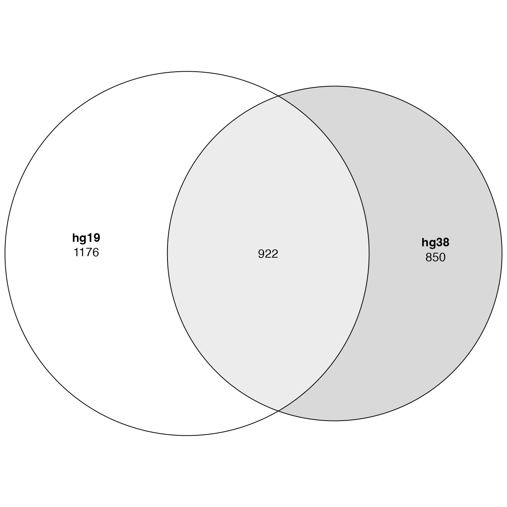
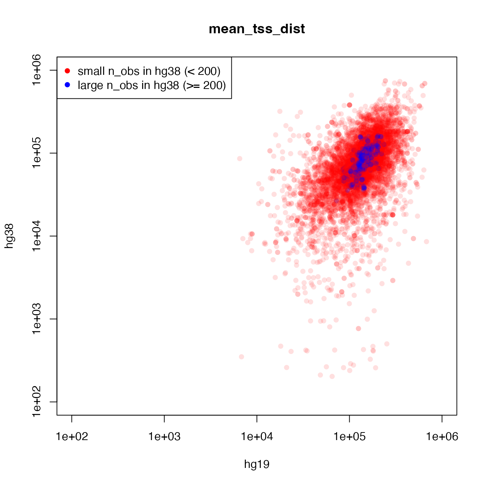

Suppl 5. Compare different genome versions
Zuguang Gu ( z.gu@dkfz.de )
2024-02-27
Source:vignettes/suppl_compare_genome_versions.Rmd
suppl_compare_genome_versions.RmdIn this document, we demonstrate the consequence of using a wrong genome version in the GREAT analysis.
We use a dataset with hg38 genome from UCSC table browser. The parameters are as follows:
clade = Mammal
genome = Human
assembly = GRCh38/hg38
group = Regulation
track = TF ChIP
table = A549 MYC (encTfChipPkENCFF542GMN)We perform local GREAT with hg38 genome as well as hg19 genome.
df = read.table("data/A549_MYC_encTfChipPkENCFF542GMN_hg38.bed")
df = df[df[, 1] %in% paste0("chr", c(1:22, "X", "Y")), ]
gr = GRanges(seqnames = df[, 1], ranges = IRanges(df[, 2]+1, df[, 3]))
res_hg19 = great(gr, "GO:BP", "TxDb.Hsapiens.UCSC.hg19.knownGene", min_gene_set_size = 0)## Warning: Inconsistent coordinate on 'chr5': Max end position (181261577) is
## larger than chromosome length (180915260).## Warning: Inconsistent coordinate on 'chr17': Max end position (83110490) is
## larger than chromosome length (81195210).## Warning: Inconsistent coordinate on 'chr18': Max end position (80034737) is
## larger than chromosome length (78077248).## Warning: Inconsistent coordinate on 'chr20': Max end position (64131770) is
## larger than chromosome length (63025520).## Warning: Inconsistent coordinate on 'chrX': Max end position (155881472) is
## larger than chromosome length (155270560).
res_hg38 = great(gr, "GO:BP", "TxDb.Hsapiens.UCSC.hg38.knownGene", min_gene_set_size = 0)
tb_hg19 = getEnrichmentTable(res_hg19)
tb_hg38 = getEnrichmentTable(res_hg38)You can already see there are warnings if using the wrong genome version.
The following plot shows overlap of significant GO terms. There are quite big disagreements.
library(eulerr)
lt = list(
hg19 = tb_hg19$id[tb_hg19$p_adjust < 0.01],
hg38 = tb_hg38$id[tb_hg38$p_adjust < 0.01]
)
plot(euler(lt), quantities = TRUE)
To directly compare the two results, next we only use the common GO terms in the two results, and make the two result tables having the same row orders.
In the following code, we also randomly permute cn to remove some pre-orderings in the result tables, which may affect later visualizations.
rownames(tb_hg19) = tb_hg19$id
rownames(tb_hg38) = tb_hg38$id
cn = intersect(tb_hg19$id, tb_hg38$id)
cn = sample(cn)
tb_hg19 = tb_hg19[cn, ]
tb_hg38 = tb_hg38[cn, ]We first make a scatter plot of log2 fold enrichment (\(log_2(obs/exp)\)) in the two results. The plot shows the relation is not very linear.
plot(log2(tb_hg19$fold_enrichment), log2(tb_hg38$fold_enrichment), pch = 16,
col = "#00000020", xlab = "hg19", ylab = "hg38", main = "log2 fold change",
xlim = c(-6, 6), ylim = c(-6, 6))Next we compare the genome fraction of the genomic domain associated to each GO term. The plot shows the relation is very linear. It makes sense because in the different genome versions, genes are more like to be shifted while the widths of corresponding genomic domains are not affacted too much.
plot(tb_hg19$genome_fraction, tb_hg38$genome_fraction, pch = 16, log = "xy",
col = "#00000020", xlab = "hg19", ylab = "hg38", main = "genome_fraction")The number of input regions that fall into the genomic domain associated with a certain GO term is denoted as a random variable \(\textit{X}\). \(\textit{X}\) follows a Binomial distribution: \(\textit{X} \sim B(\textit{p}, \textit{N})\), where \(\textit{N}\) is the total number of input regions and \(\textit{p}\) is the genomic fraction of a certain functional genomic domain. The p-value is calculated as \(\textit{P} = Pr(\textit{X} \geq \textit{n})\). As we have demonstrated in previous plots, \(\textit{N}\) is almost unchanged, and \(\textit{p}\) is highly similar in the two genome versions. The only thing that affects p-values is \(\textit{n}\), i.e. the number of input regions that fall into the genomic domain.
Next we compare the number of regions in a certain genomic domain (the column observed_region_hits in the result table) in the two genome versions. We also highlight whether the GO term is significant in both genome versions or only in one genome version.
l1 = tb_hg19$p_adjust < 0.01 & tb_hg38$p_adjust > 0.01 # only in hg19
l2 = tb_hg19$p_adjust > 0.01 & tb_hg38$p_adjust < 0.01 # only in hg38
l3 = tb_hg19$p_adjust < 0.01 & tb_hg38$p_adjust < 0.01 # both
plot(tb_hg19$observed_region_hits, tb_hg38$observed_region_hits, pch = 16, log = "xy",
col = ifelse(l1, "#FF000040", ifelse(l2, "#00FF0040", ifelse(l3, "#0000FF40", "#00000060"))),
cex = ifelse(l1 | l2 | l3, 1, 0.5),
xlab = "hg19", ylab = "hg38", main = "observed_region_hits")
legend("topleft", pch = 16, col = c("red", "blue", "green"),
legend = c("only sig in hg19", "sig in both", "only sig in hg38"))
Based on the plot above, we can see using the wrong genome versions mainly affects these functional genomic domains where only a few input regions are in. Using different genome versions, input regions may be in a genomic domain or not, which especially increases the (relative) variability of GO terms with small “observed_region_hits” (bottom left part in the plot).
We can validate it by comparing the average distance to gene TSS in each functional domain. In the following plot, we can easily see when a GO term has a smaller “observed_region_hits” (red dots), the average distances from input regions to the associated TSSs are more variable between the two genome versions.
l = tb_hg38$observed_region_hits < 200
plot(tb_hg19$mean_tss_dist, tb_hg38$mean_tss_dist, pch = 16, log = "xy",
col = ifelse(l, "#FF000020", "#0000FF60"), xlim = c(1e2, 1e6), ylim = c(1e2, 1e6),
xlab = "hg19", ylab = "hg38", main = "mean_tss_dist")
legend("topleft", pch = 16, col = c("red", "blue"),
legend = c("small n_obs in hg38 (< 200)", "large n_obs in hg38 (>= 200)"))